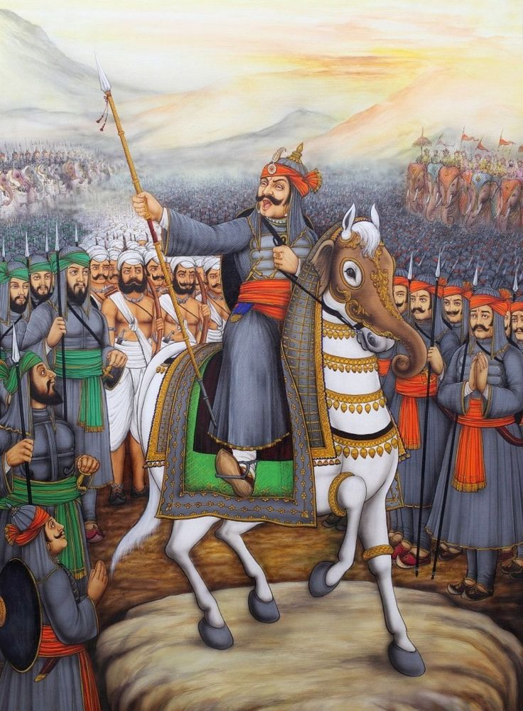
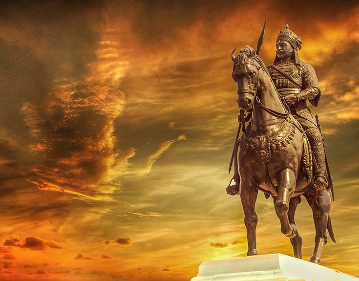

Maharana Pratap was originally born as Pratap Singh. He was the elder son of Udai Singh II and Jaiwanta Bai. Rana
Pratap’s father Udai Singh II was the founder of Udaipur.
Maharana Pratap was born on 9th May 1540 in a Hindu Rajput family who ruled the Mewar region for 35 years. In 1572,
after the death of his father, he took over the throne at the age of 32 on 1st March 1572. From that time Pratap Singh
became famous as Maharana Pratap.
There are different stories associated with Maharana Pratap’s swords. He always carried a pair of swords which were 25
kg in total. These swords are now in the Indian museum. Here are some details of him as mentioned below:
1. Birth and Lineage:
- Born on May 9, 1540, in Kumbhalgarh, Mewar (present-day Rajasthan).
- Belonged to the Sisodia Rajput dynasty.
- Son of Maharana Udai Singh II and Rani Jeevant Kanwa.
2. Struggle for Succession:
- After the death of Udai Singh II, there was a succession dispute between Maharana Pratap and his half-brother Jagmal
Singh.
- Despite being the rightful heir, Pratap faced opposition and had to establish his authority over Mewar.

3. Conflict with the Mughals:
- The most prominent phase of Maharana Pratap's life was his resistance against the Mughal Emperor Akbar.
- He refused to submit to Akbar's authority and continued to fight for the independence of Mewar.
4. Battle of Haldighati (1576):
- Most famous battle of Maharana Pratap’s life.
- Fought against the Mughal forces led by Raja Man Singh.
- Despite being outnumbered, he displayed exceptional bravery.
- Though not a clear victory, it became a symbol of his resistance.
5. Guerrilla Warfare:
- After the Battle of Haldighati, Maharana Pratap adopted guerrilla warfare tactics to harass the Mughal forces.
- He took refuge in the rugged Aravalli hills and continued his resistance against the Mughals.
6. Life in Exile:
- After the Battle of Haldighati, Maharana Pratap adopted guerrilla warfare tactics to harass the Mughal forces.
- He took refuge in the rugged Aravalli hills and continued his resistance against the Mughals.
7. Legacy:
- Maharana Pratap's legacy as a symbol of Rajput valor and resistance against foreign domination remains significant in
Indian history.
- He is revered as a hero who preferred honor and independence over submission to a foreign power.

Last Words
- Maharana Pratap died of injuries sustained in a hunting accident. He died at Chavand, which served as his capital, on 29 January 1597, aged fifty-seven.
- Maharana Paratap was lying on the bed made of grass even when he was dying as his oath of freeing Chittod was not still fulfilled. At the last moment, he took his son Amar Singh's hand and handed over the responsibility of freeing Chittod to his son and died in peace.
- There is no comparison to his fight with a cruel emperor like Akbar. When almost the whole of Rajasthan was under the control of the Mughal Emperor Akbar, Maharana Pratap fought for 12 years to save Mewar. Akbar tried various means to defeat Maharana but he remainded unbeatable till the end. Besides, he also freed a large portion of land in Rajsthan from Mughals.
- He underwent so much of hardship but he preserved the name of his family and his Motherland from defeat. His life was so bright that the other name for freedom could have been 'Maharana Pratap'.